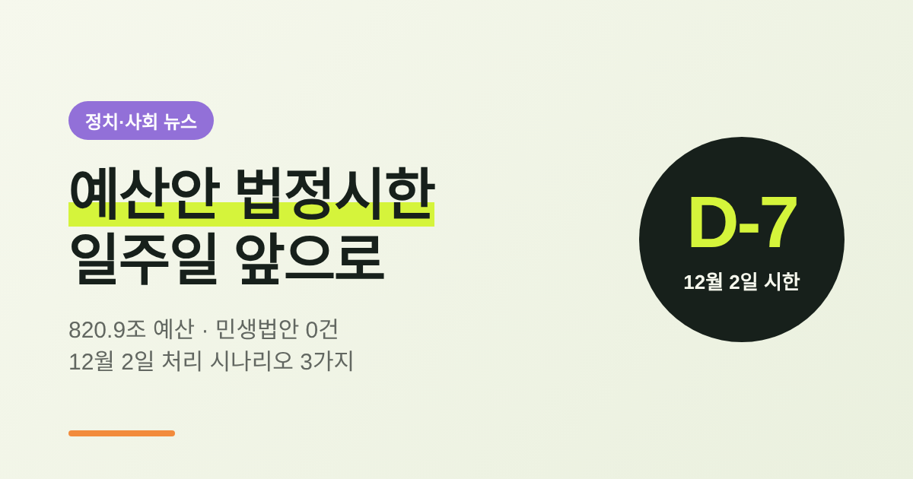
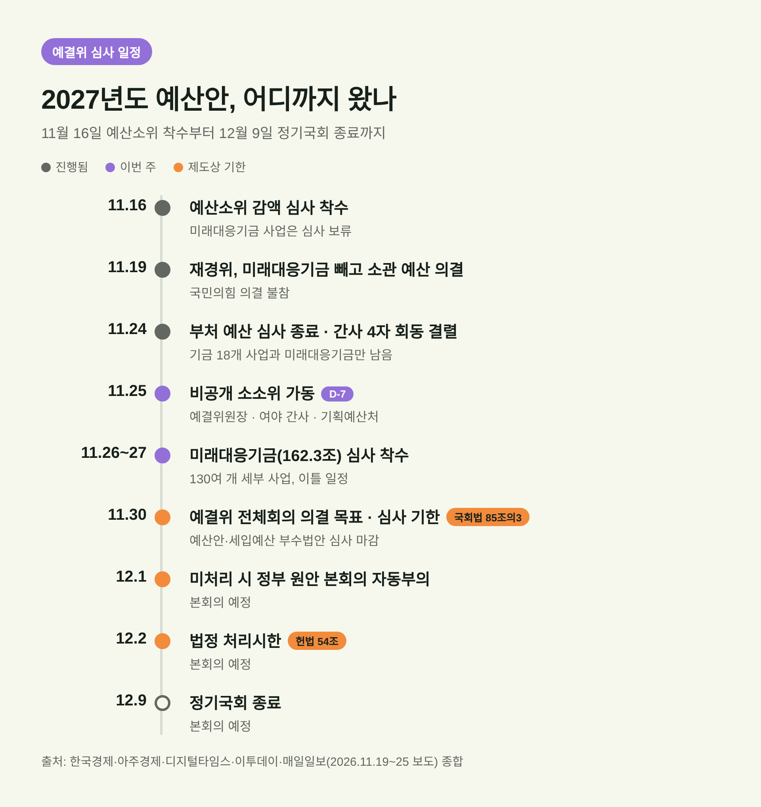
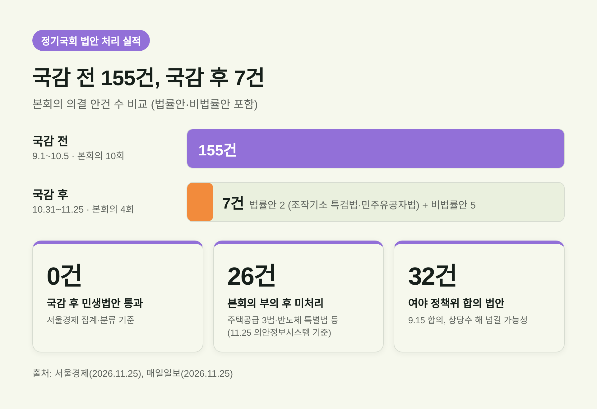
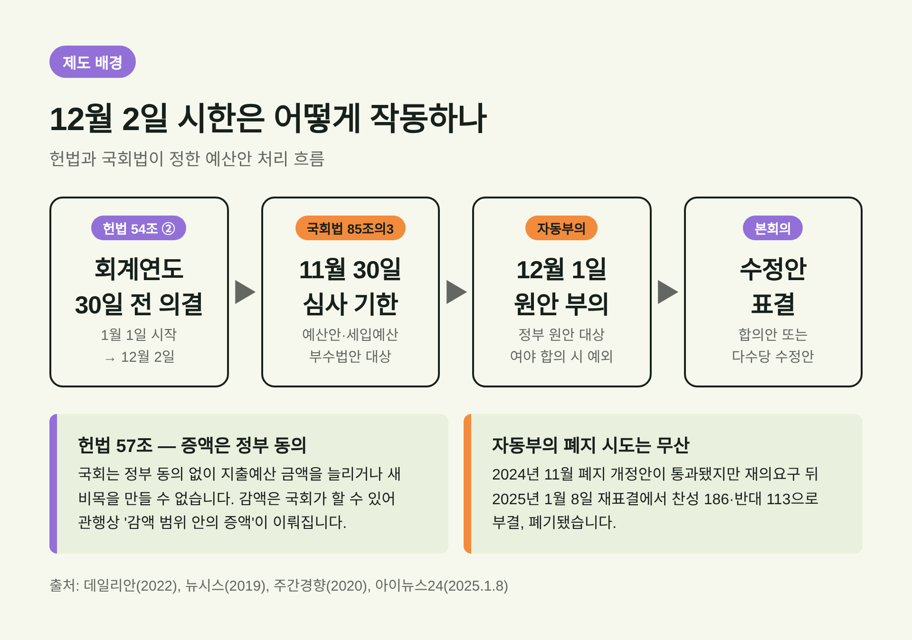
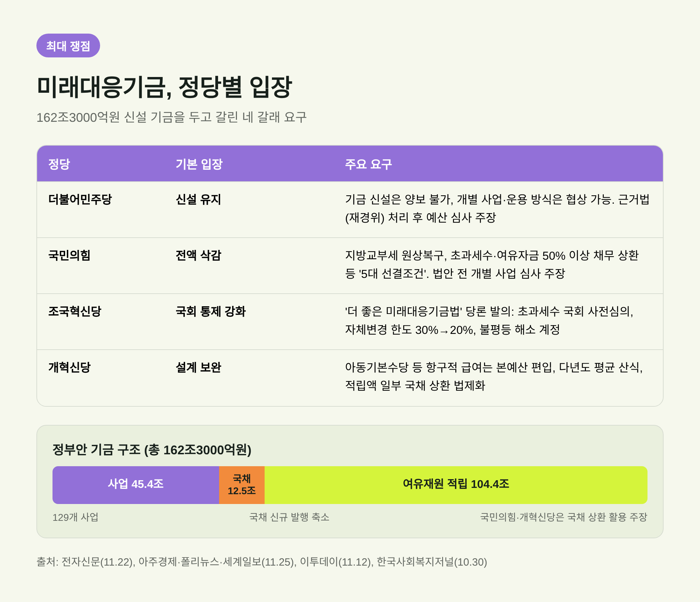
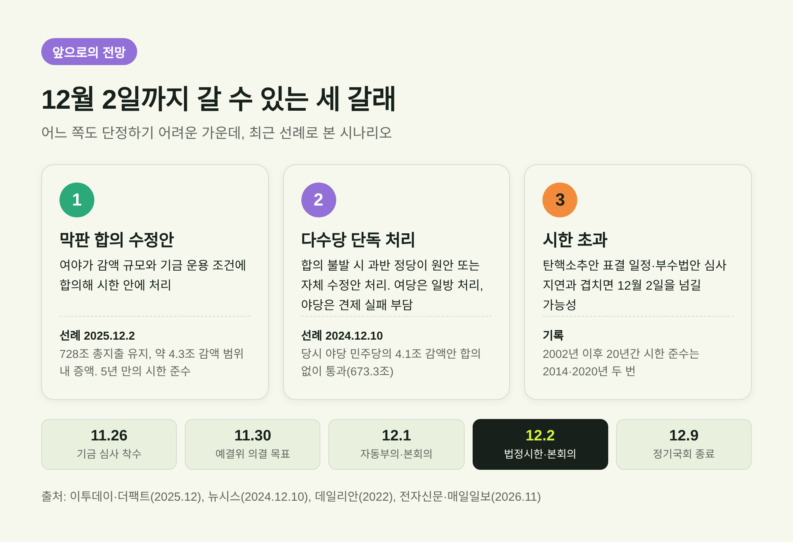

예산안 법정시한 D-7, 민생법안 0건 정기국회…12월 2일 처리 시나리오 3가지

2027년도 예산안의 국회 법정 처리시한인 12월 2일이 일주일 앞으로 다가왔습니다. 이번 글에서는 예산 심사가 지금 어디까지 왔는지, 국정감사 이후 법안 처리 실적은 어떤지, 그리고 시한 안에 처리될 가능성을 제도와 선례에 비춰 정리해 보겠습니다.
3줄 요약
- 820조9000억원 규모 예산안은 부처별 감액 심사를 마쳤지만, 162조3000억원 미래대응기금 심사는 11월 26일에야 시작합니다.
- 서울경제 집계로 국감 종료 뒤 본회의 4차례에서 처리된 민생법안은 0건이고, 본회의 부의 법안 26건이 대기 중입니다(매일일보).
- 11월 30일까지 심사를 못 마치면 정부 원안이 12월 1일 본회의에 자동부의됩니다. 남은 쟁점은 '합의 수정안이냐, 다수당 수정안이냐'입니다.
■ 무슨 일이 있었나 — 심사 막바지에 남은 가장 큰 덩어리
정부가 낸 2027년도 예산안은 총지출 820조9000억원입니다. 올해 본예산보다 93조원(12.8%) 늘어, 규모와 증가율 모두 역대 최대라고 뉴시스는 전했습니다.
국회 예산결산특별위원회(위원장 이광재) 예산안조정소위원회는 11월 16일부터 사업별 감액 심사를 해 왔습니다. 한국경제에 따르면 24일 제8차 소위로 부처 예산 심사는 끝났고, 기금 18개 사업과 미래대응기금만 남았습니다.
남은 것이 가장 큰 덩어리입니다. 미래대응기금은 162조3000억원 규모로 새로 만드는 기금입니다. 폴리뉴스가 정리한 정부안 구조를 보면 129개 사업에 45조4000억원, 국채 신규 발행 축소에 12조5000억원, 여유재원 적립에 104조4000억원이 배정돼 있습니다.
24일 소위에서는 심사 '순서'를 두고 부딪혔습니다. 야당 간사인 국민의힘 유상범 의원은 재정경제기획위원회(재경위)의 법안 심사와 별개로 개별 사업의 타당성과 감액 여부를 예결위가 따져야 한다고 했습니다. 여당 간사인 더불어민주당 정태호 의원은 근거 법안이 통과되지 않은 상태에서 개별 사업부터 심사하는 것은 맞지 않다며 재경위 논의를 기다리자고 했습니다. 같은 날 예결위·재경위 여야 간사 4자 회동이 열렸지만 합의는 없었습니다(머니투데이·아주경제·세계일보).
결국 소위는 하루를 기다린 뒤 26일 기금 심사에 착수하기로 했고, 정태호 의원은 27일 오전 11시 소위를 잠정적으로 잡았다고 밝혔습니다(아주경제). 25일에는 이광재 위원장과 양당 간사, 기획예산처 관계자가 참여하는 비공개 '소소위'도 가동됐습니다(디지털타임스).

■ 법안 쪽 성적표 — 국감 전 155건, 국감 후 7건
예산만 멈춘 것이 아닙니다. 서울경제는 10월 30일 국정감사가 끝난 뒤 본회의가 4차례 열렸지만 민생법안 통과는 0건이라고 보도했습니다. 같은 기간 처리된 법률안은 '조작기소 특검법'과 민주유공자법 개정안 2건이고, 나머지 5건은 특위 구성안 같은 비법률안이었습니다. 9월 1일부터 10월 5일까지 본회의 10회에서 155건을 의결했던 것과 대비됩니다.
예전엔 본회의가 열리면 수십 건이 한꺼번에 처리됐습니다. 지금은 쟁점 법안 하나를 두고 하루가 지나갑니다. 메트로신문은 11월 5일과 19일 본회의가 모두 쟁점 법안 중심의 '원포인트' 회의였다고 짚었습니다. 5일에는 민주당 주도로 처리된 조작기소 특검법에 국민의힘이 필리버스터(무제한 토론)로 맞섰고, 19일 민주유공자법 개정안에도 같은 방식이 이어졌습니다.
그 사이 쌓인 법안이 적지 않습니다. 매일일보는 국회 의안정보시스템 기준으로 25일 현재 본회의에 부의된 26건이 처리되지 못했다고 전했습니다. 주택공급 활성화 3법(도시정비법·도시재정비촉진특별법·용산공원 조성 특별법 개정안), 반도체 특별법, 농어촌상생협력기금 목표액을 1조원에서 2조원으로 늘리는 FTA 농어업인 지원 특별법 개정안 등이 포함됩니다. 9월 15일 여야 정책위원회가 정기국회 처리에 합의한 경제·민생 법안 32건도 상당수 해를 넘길 수 있다는 전망이 나옵니다(서울경제).
책임을 보는 시각은 엇갈립니다. 매일일보는 여당이 이견이 적은 민생법안보다 쟁점법안을 앞세우고, 야당은 법안의 시급성과 무관하게 필리버스터 방침을 고수한다고 양쪽을 함께 지적했습니다. 국민의힘은 합의되지 않은 법안이 상정되면 모든 법안에 필리버스터를 신청하겠다는 입장입니다(메트로신문). 민주당은 상임위 심사에 속도를 내고 있어 정기국회 안에 처리가 가능하다는 입장이며, 한병도 원내대표는 수능 부정행위자 응시 제한을 10년으로 늘리는 고등교육법 개정안도 회기 내 처리하겠다고 밝혔습니다(매일일보).

■ 왜 12월 2일인가 — 헌법 54조와 국회법 자동부의
12월 2일이라는 날짜는 헌법에서 나옵니다. 헌법 제54조 제2항은 정부가 회계연도 개시 90일 전까지 예산안을 내고, 국회는 회계연도 개시 30일 전까지 의결하도록 정합니다. 회계연도가 1월 1일에 시작하니 그 30일 전이 12월 2일입니다.
이 시한을 실제로 움직이게 하는 장치가 국회법 제85조의3, 이른바 예산안 자동부의 제도입니다. 예결위와 상임위는 예산안과 세입예산안 부수 법률안 심사를 11월 30일까지 마쳐야 합니다. 마치지 못하면 12월 1일 본회의에 부의된 것으로 봅니다. 국회의장이 교섭단체 대표의원과 합의하면 예외로 할 수 있습니다(뉴시스·데일리안).
자동부의되는 것은 정부 원안입니다. 그래서 의장이 원안을 상정해 두고 여야 합의 수정안을 기다리는 방식이 관례처럼 쓰여 왔습니다(뉴시스 2019). 이 제도는 한때 폐지 직전까지 갔습니다. 2024년 11월 자동부의를 없애는 국회법 개정안이 통과됐지만, 정부의 재의요구 뒤 2025년 1월 8일 재표결에서 찬성 186표·반대 113표로 부결돼 폐기됐습니다(아이뉴스24). 제도는 지금도 살아 있습니다.
또 하나 알아둘 조항이 헌법 제57조입니다. 국회는 정부 동의 없이 지출예산 각 항의 금액을 늘리거나 새 비목을 만들 수 없습니다(주간경향 인용). 감액은 국회가 할 수 있지만, 증액은 정부가 동의해야 한다는 뜻입니다. 그래서 관행적으로 감액한 범위 안에서 증액이 이뤄집니다. 이번 협상이 '얼마를 깎느냐'에 집중되는 이유도 여기에 있습니다.

■ 쟁점은 무엇인가 — 기금 하나를 두고 다섯 갈래 입장
최대 쟁점은 단연 미래대응기금입니다. 각 정당의 입장을 같은 비중으로 정리하면 다음과 같습니다.
더불어민주당은 기금 신설을 포함한 정부안을 지킨다는 입장입니다. 기금 신설 자체는 양보할 수 없지만 개별 사업과 운용 방식은 협상할 수 있다고 밝혔습니다(전자신문·폴리뉴스). 한병도 원내대표는 반도체 호황으로 늘어난 세수를 청년·미래산업·지역 발전에 투자하자는 취지라고 설명했고(kjtimes), 허영 의원은 여유자금 전액을 국채 상환에 쓰자는 주장에 대해 자본시장을 흔든다고 반박했습니다(폴리뉴스).
국민의힘은 기금 전액 삭감과 지방교부세 원상복구를 요구합니다(전자신문). 기금 전입금을 내국세에서 빼면 2027년 지방교부세 정률분이 약 30조5000억원 줄어든다는 국회예산정책처 분석이 근거로 거론됩니다(세계일보·폴리뉴스). 초과세수·여유자금의 최소 50%를 국가채무 상환에 쓰는 것 등 '5대 선결 조건'을 수용하기 전에는 법안 심사를 진행할 수 없다는 입장입니다(아주경제). 나경원 의원은 기금을 "사금고"로, 박성훈 수석대변인은 "정권의 전리품"처럼 쓰려 한다고 표현했습니다(폴리뉴스·YTN).
소수정당은 '조건부 손질'에 가깝습니다. 조국혁신당은 '더 좋은 미래대응기금법'을 당론 발의했습니다. 초과세수도 국회 사전 심의를 거치게 하고, 정부가 국회 의결 없이 바꿀 수 있는 한도를 정부안 30%에서 20%로 낮추며, 불평등 해소 계정을 신설하자는 내용입니다(이투데이). 개혁신당은 세입 변동 완충장치의 필요성에는 동의하면서도 아동기본수당 같은 항구적 급여는 본예산으로 옮기고, 적립액 일부의 국채 상환을 법으로 정하자고 요구했습니다. "호황은 끝나도 수당은 끝나지 않습니다"라는 표현을 썼습니다(한국사회복지저널).
기금 밖 쟁점도 있습니다. 대통령실 특수활동비 약 82억원, 정부안 78억원이 잡힌 대통령 직속 '빛의 위원회', 지역사랑상품권, 기본사회 예산 등입니다(디지털타임스·YTN·폴리뉴스). 세계일보는 11월 16~24일 소위에서 보류되거나 소소위로 넘어간 사업이 최소 127건인데, 결과가 소위에 보고된 것은 11건뿐이라며 '깜깜이 심사' 우려를 제기했습니다. 소소위는 국회법상 근거와 회의록이 없는 비공식 협의체입니다.

■ 정쟁 변수 — 특검법·장외집회·탄핵소추안
예산 협상은 국회 밖 일정과도 얽혀 있습니다. 국민의힘은 조작기소 특검법(국민의힘은 "이재명 탈옥법"으로 부름)을 규탄하며 전국 순회 집회를 열고 있습니다. 11월 14일 부산을 시작으로 21일 대구, 25일 경주, 26일 용인, 28일 대전, 29일 상주·문경을 거쳐 12월 5일 서울로 이어지는 일정입니다(파이낸셜뉴스).
한병도 원내대표는 25일 "왜 이 황금 같은 정기국회 한복판에 국회가 아닌 거리에 있는지 아무도 모른다"며 국회 복귀를 요구했습니다(데일리한국). 국민의힘은 특검법이 이 대통령 관련 공소취소에 활용될 수 있다며 거부권 행사를 촉구해 왔습니다(파이낸셜뉴스).
범여권의 조희대 대법원장 탄핵소추안도 변수입니다. 김민석 민주당 대표가 범여권 5당 연대를 제안했고, 당 탄핵소추추진단은 이번 주 안에 소추안 작성을 마칠 계획입니다. 탄핵소추안은 본회의 보고 뒤 24시간 이후 72시간 이내에 표결해야 해 본회의 일정 조정이 불가피하다고 매일일보는 전했습니다. 이주희 원내대변인은 예산안 등 원내 일정을 종합해 처리 시점을 정하겠다고 했습니다.
일정상 공백도 있습니다. 조정식 국회의장은 11월 23일부터 29일까지 일본·호주를 순방 중이어서 이번 주에는 본회의가 열리지 않습니다(뉴스1·서울경제). 남은 본회의는 12월 1일·2일·9일로 예정돼 있습니다(매일일보).
■ 앞으로의 전망 — 12월 2일까지 갈 수 있는 세 갈래
남은 시나리오는 크게 세 가지로 정리됩니다.
① 막판 합의 수정안 처리. 작년이 이 경우였습니다. 2025년 12월 2일 여야는 당일 오전 합의에 이르러 2026년도 예산을 정부안 총지출 728조원 그대로 처리했습니다. 약 4조3000억원을 깎고 그 범위 안에서 증액했습니다(이투데이·더팩트). 5년 만의 시한 준수였고, 자동부의 제도 도입 뒤 2014년·2020년에 이어 세 번째였습니다.
② 다수당 수정안 단독 처리. 합의가 불발되면 과반 의석의 민주당이 정부 원안이나 자체 수정안을 처리할 수 있습니다. 전자신문은 이 경우 여당은 일방 처리 부담을, 국민의힘은 예산 견제에 실패했다는 비판을 각각 떠안을 수 있다고 분석했습니다. 반대 방향의 선례도 있습니다. 2024년 12월 10일에는 당시 야당이던 민주당이 정부안에서 4조1000억원을 깎은 감액안을 합의 없이 처리해, 673조3000억원 예산이 확정됐습니다(뉴시스).
③ 시한을 넘긴 처리. 본회의 일정이 탄핵소추안 표결과 겹치거나 부수법안 심사가 길어지면 12월 2일을 넘길 수 있습니다. 2002년 이후 20년 동안 시한을 지킨 해는 2014년과 2020년 두 번뿐이었다는 기록(데일리안)이 이 가능성을 가볍게 볼 수 없게 합니다.
현재로선 어느 쪽도 단정하기 어렵습니다. 민주당은 시한 내 처리를 거듭 밝혔고, 국민의힘은 기금 심사가 비공개로 넘어가는 것을 경계하고 있습니다. 다만 미래대응기금 130여 개 세부 사업을 이틀 만에 심사해야 해 '졸속' 우려가 나온다는 점(아주경제)은 어떤 시나리오에서도 남는 숙제입니다.

앞으로 볼 일정
- 11월 26일: 예산소위 미래대응기금 심사 착수
- 11월 27일: 예산소위(오전 11시, 잠정)
- 11월 30일: 예결위 전체회의 의결 목표, 예산안·부수법안 심사 기한
- 12월 1일: 미처리 시 정부 원안 자동부의, 본회의
- 12월 2일: 법정 처리시한, 본회의
- 12월 9일: 본회의, 정기국회 종료
정리하면 이렇습니다. 이번 주 국회의 시계는 두 개입니다. 하나는 12월 2일 예산 시한이고, 다른 하나는 12월 9일 정기국회 종료입니다. 두 시계 모두 미래대응기금 협상과 정쟁 일정이라는 같은 변수에 묶여 있습니다.
"예산은 시한을, 법안은 회기를 지킬 수 있느냐" — 이번 정기국회 마지막 2주가 답해야 할 질문입니다. 결과를 미리 묻는다면, 아직은 11월 30일 예결위 전체회의를 지켜봐야 한다고 답하겠습니다.
참고자료
- 서울경제, 「국감 후 본회의 4차례 열렸지만…민생법안 통과 0건」, 2026-11-25, https://www.sedaily.com/article/20118958
- 매일일보, 「정쟁에 발목 잡힌 민생…정기국회 '빈손' 위기」, 2026-11-25, https://www.m-i.kr/news/articleView.html?idxno=2023234
- 메트로신문, 「본회의서 민생·경제 법안 처리 늦장, 정쟁엔 열중하는 여야」, 2026-11-19, https://www.metroseoul.co.kr/article/20261119500461
- 뉴시스, 「막 오른 821조 예산 격돌…」, 2026-11-02, https://newsis.com/view/NISX20261101_0003849921
- 디지털타임스, 「820조 예산안 법정시한 D-7…與·野 '물밑 담판' 돌입」, 2026-11-25, https://www.dt.co.kr/article/12097215
- 머니투데이 더300(서플), 「예산안 시한 D-7, 국회 발등에 불…26일 미래대응기금 심사 착수」, 2026-11-25, https://supple.kr/news/cmwvp2kjiuy5zkwp85i1xa0ll
- 아주경제, 「미래대응기금 예산 심사 26일 시작…130여개 사업 이틀 만에 졸속 심사 우려」, 2026-11-25, https://ajunews.com/view/20261125154917855
- 한국경제, 「미래대응기금 심사 평행선…野 날림심사 우려」, 2026-11-25, https://www.hankyung.com/article/2026112503261
- 세계일보, 「820조 슈퍼예산 심사 막바지… 116건 '깜깜이' 우려」, 2026-11-25, https://www.segye.com/newsView/20261125516175
- 폴리뉴스, 「예산소위 마지막 주, 162조 미래대응기금 최대 뇌관」, 2026-11-25, https://www.polinews.co.kr/news/articleView.html?idxno=749224
- 전자신문, 「예산안 처리 시한 열흘 앞…與 '820조 원안 사수' 野 '미래대응기금 전액 삭감' 전망」, 2026-11-22, https://www.etnews.com/20261122000046
- YTN, 「'정치 공방'에 흔들리는 내년 예산...법정 기한 처리 빨간불?」, 2026-11-21, https://www.ytn.co.kr/_cs/_ln_0101_202611211900519936_005.html
- 데일리한국, 「한병도, 국힘 장외집회 직격…」, 2026-11-25, https://daily.hankooki.com/news/articleView.html?idxno=1428811
- 파이낸셜뉴스, 「국힘, 내달 초까지 전국 돌며 '조작기소 특검법' 규탄 집회」, 2026-11-18, https://www.fnnews.com/news/202611180500435766
- kjtimes, 「조정식 의장 '개헌 시동'에 여야 공방…821조 예산안 심사 '12월 2일 시한' 변수로」, 2026-11-18, https://www.kjtimes.com/news/article.html?no=80519
- 뉴스1, 「조 의장, 日·호주 5박 7일 순방」, 2026-11-23, https://www.news1.kr/politics/assembly/6362068
- 이투데이, 「혁신당, '더 좋은 미래대응기금법' 당론 발의」, 2026-11-12, https://www.etoday.co.kr/news/view/2647548
- 한국사회복지저널, 「개혁신당, 미래대응기금 재원·지출 구조 개선 요구」, 2026-10-30, https://www.ksw-news.com/news/articleView.html?idxno=3054407
- 데일리안, 「법 만드는 국회, 20년 동안 '두 번' 지켰다」, 2022-11-24, https://www.dailian.co.kr/news/view/1176357/
- 뉴시스, 2019년 예결위 활동 시한·자동부의 기사, 2019-11-30, https://mobile.newsis.com/view/NISX20191130_0000846380
- 아이뉴스24, 「국회법·증감법·양곡법, 재표결서 부결…최종 폐기」, 2025-01-08, https://www.inews24.com/view/1802038
- 주간경향, 「쪽지예산은 존재하지 않는다」, 2020-12-18, https://weekly.khan.co.kr/article/202012181459191
- 이투데이, 「예산안 5년만에 법정시한 준수…」, 2025-12-02, https://www.etoday.co.kr/news/view/2531823
- 뉴시스, 「내년 673.3조원 예산안 확정…초유의 야 '4.1조 감액' 본회의 통과」, 2024-12-10, https://www.newsis.com/view/NISX20241210_0002991740